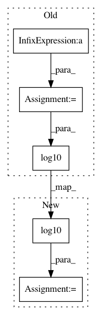

07a9450b407ee5dc89b82e388840d510b009ef3e,lib/matplotlib/scale.py,LogitTransform,transform_non_affine,#LogitTransform#Any#,441
Before Change
def transform_non_affine(self, a):
logit transform (base 10), masked or clipped
with np.errstate(invalid="ignore"):
a = np.select(
[a <= 0, a >= 1], [self._fill_value, 1 - self._fill_value], a)
return np.log10(a / (1 - a))
def inverted(self):
return LogisticTransform(self._nonpos)
After Change
def transform_non_affine(self, a):
logit transform (base 10), masked or clipped
with np.errstate(divide="ignore", invalid="ignore"):
out = np.log10(a / (1 - a))
if self._clip: // See LogTransform for choice of clip value.
out[a <= 0] = -1000
out[1 <= a] = 1000
return out
In pattern: SUPERPATTERN
Frequency: 3
Non-data size: 5
Instances
Project Name: matplotlib/matplotlib
Commit Name: 07a9450b407ee5dc89b82e388840d510b009ef3e
Time: 2017-10-20
Author: anntzer.lee@gmail.com
File Name: lib/matplotlib/scale.py
Class Name: LogitTransform
Method Name: transform_non_affine
Project Name: librosa/librosa
Commit Name: ad7292d5ce9dd3f713f4c091e188615a5ac95f97
Time: 2015-02-15
Author: brian.mcfee@nyu.edu
File Name: librosa/core/time_frequency.py
Class Name:
Method Name: A_weighting
Project Name: matplotlib/matplotlib
Commit Name: 668ff586c12a3c577ddd985a375030381e80539c
Time: 2017-10-25
Author: tcaswell@gmail.com
File Name: lib/matplotlib/scale.py
Class Name: LogitTransform
Method Name: transform_non_affine